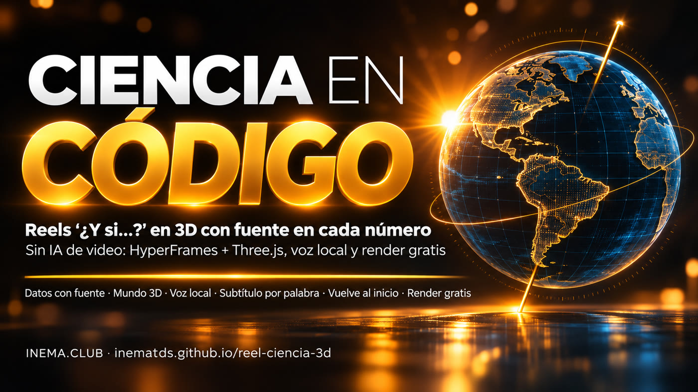

Tú haces la pregunta y decides en qué confías. Claude investiga las fuentes, construye el mundo 3D, genera la voz en tu computadora y entrega el MP4. Ninguna imagen fue dibujada por IA y el renderizado es gratis.

reel-ciencia-3d es un kit con una skill para Claude Code: convierte una pregunta como «¿Y si la Tierra no tuviera inclinación?» en un video vertical de unos 60 segundos para Reels, Shorts y TikTok. Está pensado para docentes, divulgadores y creadores que quieren hacer videos de ciencia sin equivocarse con los datos. Todo se crea con código (HyperFrames para el video, Three.js para el 3D), cada dato aparece con su fuente, la voz se genera en tu computadora y el reel vuelve al inicio sin salto. Necesitas Node.js, ffmpeg y Claude Code.
La ciencia exige datos exactos. Un generador de video se equivoca en las etiquetas, cambia el gráfico de una escena a otra y cada corrección cuesta créditos. Con código, el dato que aparece en pantalla es el que escribiste.
Antes de animar, Claude escribe fatos.md. Sin fuente (NASA, NOAA, la Marina, una universidad), el dato no aparece en pantalla ni en la voz. Los cálculos propios se marcan como CÁLCULO.
Los mismos objetos aparecen como el mundo actual y como una «planta técnica» azul del mundo «¿y si…?». Hay un globo con los continentes reales (Natural Earth) y un solo color cálido: el amarillo del elemento principal.
La voz se genera en tu computadora (Chatterbox + Whisper) con el tiempo de cada palabra. Los subtítulos, las tarjetas y la cámara aparecen justo cuando se dice cada palabra.
Tú tomas cuatro decisiones: la herramienta, los datos, el mensaje con los elementos visuales y tu evaluación del resultado. Claude y los scripts se encargan del resto del trabajo pesado.
Eliges la pregunta y la respuesta que el reel debe demostrar, apruebas el guion, revisas las imágenes fijas y pides un cambio a la vez.
Investiga y verifica las fuentes, escribe el guion, crea la página y el 3D, genera las imágenes de revisión y evalúa el MP4 con las 3 preguntas.
HyperFrames: convierte una página HTML animada en MP4. Three.js: 3D en el navegador. Indicador: medidor fijo en la esquina (inclinación, cronómetro). Bloque: cada parte del guion. Planta técnica: apariencia azul del mundo «¿y si…?». LUFS: medida de volumen de las redes (−14). Skill: instrucciones que Claude Code sigue automáticamente. Whisper: transcribe la voz y marca el tiempo de cada palabra.
voz.py (voz + Whisper), montar.py (reloj y subtítulos), mezcla.py (música por código), preparar.py y HyperFrames para revisar y renderizar.
El renderizado, la voz y la música funcionan en tu computadora. El único costo es tu plan de Claude.
HyperFrames se descarga solo la primera vez (junto con el navegador que renderiza). La música por código usa numpy.
node --version ffmpeg -version python3 -m pip install numpy npx hyperframes doctor # indica qué falta
instalar.sh conecta la skill con ambos y prueba el ejemplo.
git clone https://github.com/inematds/reel-ciencia-3d cd reel-ciencia-3d bash instalar.sh
voz.py usa Chatterbox (genera la voz a partir de ~15 s de una grabación tuya) y Whisper (escucha y marca el tiempo de cada palabra), instalados mediante inemavox (kit abierto de voz y transcripción local; sigue su README (en portugués)). Si no los tienes, usa el modo sin voz del paso 3.
export INEMAVOX_DIR=~/inemavox # Whisper + worker de Chatterbox export CHATTERBOX_PYTHON=~/miniconda3/envs/chatterbox/bin/python3 export VC_VOZ=/ruta/tu-voz.wav # ~15 s limpios export VC_IDIOMA=es # idioma de la voz y la alineación (por defecto: pt)
Reemplaza <id> por el nombre de la carpeta de tu reel (p. ej., dia-48h). Los 3 ejemplos de exemplos/ se hicieron exactamente así.
Abre Claude Code en la carpeta del kit y pega la tarjeta de prompts/1-cartao-de-pedido.md (en portugués), cambiando la pregunta, la respuesta, los bloques y el indicador.
# fragmento de la tarjeta Usa la skill reel-ciencia-3d. Haz un reel vertical de ~60 s: «¿Y si el día durara 48 horas?» 1. Primero, los datos. Escribe exemplos/dia-48h/fatos.md: cada dato con su fuente...
Es la decisión más importante. Lee la tabla «Dejado fuera»: ahí quedan las curiosidades famosas sin fuente. Tú decides en qué confías.
cat exemplos/<id>/fatos.md # fuente + cita + fecha en cada línea
La voz marca el ritmo del reel: cada subtítulo, tarjeta y movimiento de cámara se sincroniza con el tiempo de las palabras. <rid> es el campo "id" de roteiro.json (en los ejemplos: terra, sol, lua). mezcla.py crea la música por código y la mezcla con la voz.
# carpeta nueva a partir del ejemplo (solo la página y el código 3D; la voz y el sonido se generan abajo) mkdir -p exemplos/<id>/js cp exemplos/terra-sem-inclinacao/{index.html,hyperframes.json,package.json,roteiro.json} exemplos/<id>/ cp exemplos/terra-sem-inclinacao/js/mundo.js exemplos/<id>/js/ # edita exemplos/<id>/roteiro.json: "id", "tela" (voz → pantalla) y los bloques b0…bN con las frases # con voz local python3 ferramentas/voz.py --projeto exemplos/<id> exemplos/<id>/roteiro.json python3 ferramentas/montar.py --projeto exemplos/<id> # → js/tempos.js (subtítulos listos) python3 ferramentas/mezcla.py --projeto exemplos/<id> --id <rid> --musica tranquila # sin voz: solo subtítulos y música (el tiempo de cada palabra se estima a partir del texto) python3 ferramentas/montar.py --projeto exemplos/<id> --sem-voz # muestra el "fin" en segundos python3 ferramentas/mezcla.py --projeto exemplos/<id> --id <rid> --duracao <fin> --musica tranquila
Cambia el contenido de la página copiada en el paso 3: indicador en la parte superior, tarjetas con la línea de la fuente y las escenas de js/mundo.js. preparar.py configura el sonido para el reel de esa carpeta.
python3 ferramentas/preparar.py --projeto exemplos/<id> # motor + duración + sonido final cd exemplos/<id> && npx hyperframes check # 0 errores
Revisar una imagen toma segundos; corregir una animación terminada lleva mucho más. Elige segundos que caigan en medio de cada bloque de tu reel (montar.py muestra el final; los bloques están en js/tempos.js).
npx hyperframes snapshot --at 0,5,15,25,35,45,55,67 --no-end -o stills
¿Se puede leer todo en el celular? ¿La escala es honesta? ¿Hay algo claro que mirar? Pide un solo cambio a la vez y deja todo lo demás igual.
Cambia solo la cámara de la escena de la Antártida para que se vea completa la estación. Mantén todo lo demás igual. Vuelve a generar la imagen.
Unos 5 minutos para un reel de 65 s, en tu computadora.
npx hyperframes render --output renders/<id>.mp4
Revisa fotogramas del archivo final, no de la vista previa. Comprueba las dimensiones y el volumen, y sigue checklists/antes-de-publicar.md (en portugués).
ffmpeg -i renders/<id>.mp4 -vf fps=1/3,scale=216:-1,tile=8x3 renders/folha.jpg ffprobe renders/<id>.mp4 # 1080x1920, 30 fps ffmpeg -i renders/<id>.mp4 -af ebur128 -f null - # ≈ −14 LUFS
Cada uno incluye fatos.md, roteiro.json, el código del mundo 3D, la voz y el sonido listos en exemplos/<id>/. El MP4 se genera con npx hyperframes render dentro de la carpeta. Los 3 reels están narrados en portugués.
El formato se puede repetir; el tema y la investigación, no. Cada reel debe enseñar algo nuevo.